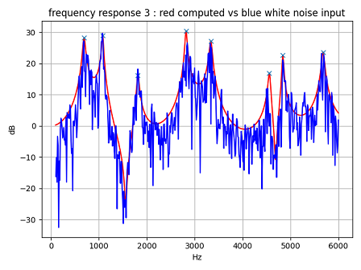
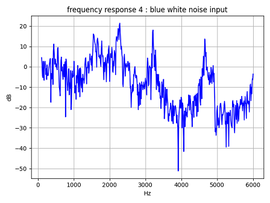

Vocal Tube T
This is an experiment of 3-way junction model, T Three Tube Mode.
contents
T_three_tube.py and oneloop_four_tube.py is a definition of the tube model.
Example: T Three Tube Mode
comparison computed frequency response to white noise input frequency response using FFT analysis.
python tube_check_T.py

A3=0 (simple two tube)

Example: one-loop Four Tube Model
draw white noise input frequency response using FFT analysis.
python tube_check_1loop.py
attenuation constant per one step in tube2 and tube3 is 0.998.

attenuation constant per one step in tube2 and tube33 is 1.0.
